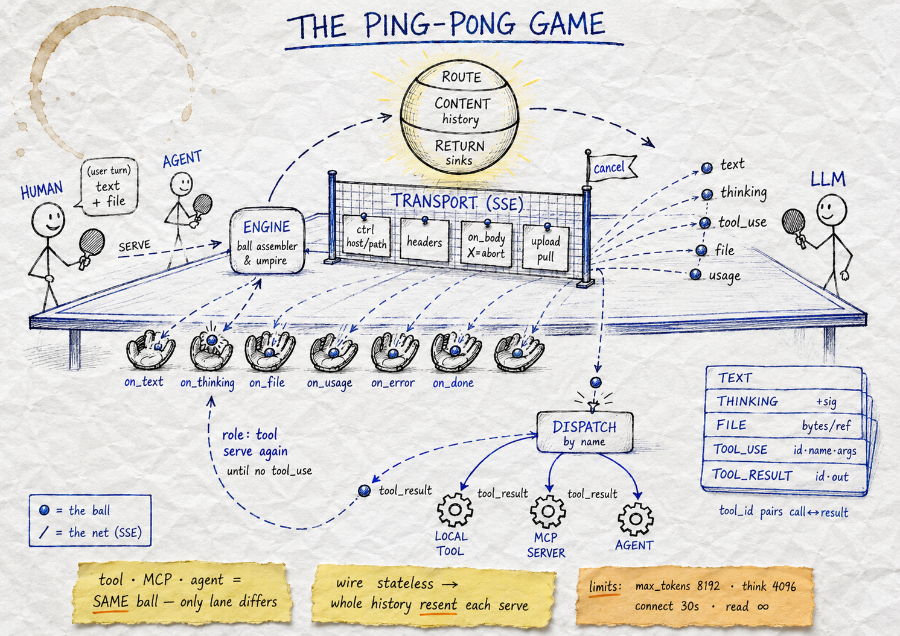
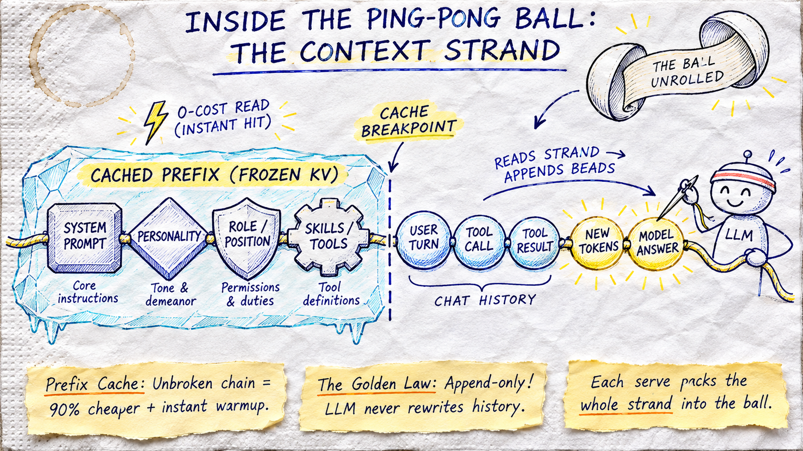

AI can perform tasks. Organizations need a way
to delegate work with control.
How could one engineer delegate meaningful work to AI while retaining control of the workspace?
Explore useful delegation.
[Start date pending]
Bring roles, tools and context together.
[Milestone validation pending]
Test the approach with customers.
Proposed next stage
Provisional founding narrative. Founder confirmation and dated milestones are required.
Our thesis: the opportunity includes organizing AI work,
alongside building and accessing better models.
Compute, chips and hosting.
Reasoning and generation.
Delegation, workflows and controls.
Sigma's proposed position.
No market figures are asserted. Infrastructure investment, model revenue and customer spending must be measured separately.
Trying AI is easy. Giving it access to valuable work
requires answers to harder questions.
What can it access or disclose?
Can we independently verify its work?
How do we bound resource use?
Can projects and users remain separated?
Can we understand and recover from failures?
The commercial opening: make controlled delegation practical for organizations with valuable information.
Buyer concerns to validate in interviews. This slide makes no claim of guaranteed security or regulatory compliance.
An integrated approach to roles, working context and control.
Assign work to named positions with defined responsibilities.
Reuse operating instructions and approved skills.
Manage working history and retained knowledge.
Scope information access, tools and workspaces.
Source: supplied Sigma source audit, v2.1.13; not operational testing. Controls depend on configuration. Code count must exclude dependencies and generated files.
Teams that want useful AI assistance
without unrestricted access to sensitive work.
Engineers and technical researchers handling confidential projects.
Head of engineering or R&D, with security and IT approval.
A bounded engineering task with independently checked outputs.
Possible expansion markets: capital management and government. Each requires separate customer discovery and assurance requirements.
Target segment only. No customer, contract, endorsement or procurement readiness is implied.
Prove a valuable workflow. Earn adoption. Expand on evidence.
Recruit within the initial segment.
Define scope and success criteria.
Check value and operational fit.
Seek conversion on approved terms.
Extend where value is demonstrated.
Proposed commercial path, not reported traction. No revenue forecast or conversion rate is asserted.
Proposed investment priorities for the next stage.
Evaluations and onboarding.
Packaging and documentation.
Security testing and operational validation.
A focused route to initial customers.
Our investment thesis: organizations will need a controlled way to put capable models to work.
Steven Varga • Varga Labs
Process Containment • Agent Fleet • Editor Bridges • Multi-Provider Routing
Use → to navigate the top-level narrative, or ↓ to drill down into technical details.
Single-turn conversational model:
Active software actor in an execution environment:
Core Principle: An agent is not a text generator. It is an untrusted software process executing code mutations inside your workspace.
An autonomous developer agent is not a single prompt. It is a continuous rally between Reasoner and Environment.

Player 1 (The Model): Emits intent and candidate code modifications.
Player 2 (The Workspace): Compiles, lints, and returns test observations.
The rally repeats until tests pass and acceptance criteria are satisfied.
What actually flies across the net? The context window is the physical carrier of state in the agent rally.

Every stroke of the paddle imprints information onto the ball:
As the rally lengthens, the ball accumulates weight. If unmanaged, context limits burst, cache eviction penalties spike, and the ball drops (silent truncation & hallucination).
Strict admission token limits, deterministic memory atomization, tape ledger compaction, and attempt fencing keep the rally moving without dropping state.
Moving from single-turn "clever phrasing" to deterministic multi-turn systems state management.
| Dimension | Naive Prompting | Context Engineering |
|---|---|---|
| Scope | Single-turn string format | Multi-turn state machine |
| Structure | Markdown prose walls | Strict schemas & typed tags |
| Evidence | Latent weight guessing | Verified reads & compiler codes |
| Lifecycle | Transient, discarded | Compacted, epoch-keyed, cached |
Static rules (AGENTS.md, tool schemas) sit at the head; dynamic memories and observations append at the tail → ~80% KV-cache hits, slashing latency and cost.
No hallucinated file edits. File mutations require a current read_file in the active context window. Observations are raw exit codes and diffs, not narrative opinions.
When the ball exceeds headroom limits, older turns fold into 12 KiB semantic summaries. Verbose compiler logs collapse to exit codes with fetch tokens (tool_result_read).
The Core Invariant: Prompt engineering guides the model's intent. Context engineering determines whether that intent survives turn twelve without attention degradation or state loss.
LLMs do not read characters or words—they perceive integer token IDs via Byte-Pair Encoding (BPE).
Text is translated into numbers via a fixed statistical vocabulary before neural processing:
return, void, std::) are 1 token. Rare or complex names (snake_case_t) fragment into 3–4 subwords."sigma", "_", "aid"] (3 tokens in legacy BPE)"void", " test", "()"] (3 tokens)
Vocabulary size dictates code compression ratio and effective context capacity:
| Generation / Model | Vocab Size | Code Compression & Behavior |
|---|---|---|
| Legacy (GPT-3 / LLaMA 1) | ~32k–50k | Heavy fragmentation; high token tax on code & JSON. |
| OpenAI cl100k → o200k | 100k → 200k | o200k (GPT-4o) yields 15–20% denser code compression. |
| Claude 3.5 / 3.7 | ~65k–100k | Optimized for XML tool wrapping, indentation & prose. |
| Qwen 2.5 / LLaMA 3 | 128k–152k | Single tokens for multi-space indents & polyglot code. |
The Engineering Takeaway: A larger vocabulary means the exact same 500-line C++ file consumes ~25% fewer tokens—effectively expanding your context budget.
The Metric of Truth: Context limits, admission budgets, KV-cache slots, and cloud invoices are measured in tokens, never lines of code. How these tokens accumulate across turns dictates whether your agent succeeds or burns out.
Why naive "infinite context windows" are an operational trap: quadratic billing taxes and cognitive degradation.
In an agent rally, each new turn re-sends the entire accumulated transcript. The billing math is super-linear:
Research (Liu et al., Anthropic) proves that LLM retrieval accuracy collapses when critical constraints sink into the middle of deep context:
The Systems Mandate: A 200k context window gives the model room to get lost. Without early admission limits (85% cap), tool budgeting (64 KiB), and semantic compaction epochs, longer sessions produce worse code at higher cost.
Ground truth multi-lane message bus architecture (sigma::aid::bus_t) choreographing the rally.
Sockets enter the central message bus. Lanes never communicate directly; all events fan out through the router.
Model emits tool calls → Router dispatches to 4 branches → Results joined to Router → Continuation back to Model.
Immutable disk ledger persists routed events without blocking or entering the return execution path.
Stack Overflow 2025/2026 Developer Survey:
Scale AI SWE-bench Pro, METR, GitClear:
The Verification Mandate: Developers reject AI as an unconstrained “oracle.” They embrace AI when it operates as an untrusted junior engineer inside a deterministic compiler and test verification harness.
Verified developer productivity gains from Stack Overflow, GitHub, and enterprise field studies.
Generating boilerplate, data conversion routines, serialization formats, API glue, and client bindings. Replaces repetitive manual typing with fast reviewable drafts.
Translating 40-line template metaprogramming errors into plain English, navigating unfamiliar libraries, explaining legacy logic, and constructing regex/SQL queries.
Synthesizing unit tests, mocking external interfaces, generating property fuzz inputs, and creating regression test harnesses from bug reports.
Mechanical language migrations (e.g. C++17 to C++23 std::expected), renaming deprecated APIs across dozens of headers, and updating configuration schemas.
Consensus Finding: When bounded to localized, deterministic scopes with immediate compiler/linter feedback, AI delivers genuine 20–40% velocity improvements.
Why frontier LLMs fail when tasks expand beyond single functions into multi-turn repos.
Models score >70% on curated, synthetic test benches. But on SWE-bench Pro (real complex codebases with copyleft dependencies, messy build trees, and zero regressions allowed), pass rates collapse to ~23%.
Source: Scale AI / SWE-bench Pro 2025Empirical agent evaluations show that task length with 50% completion reliability tops out at ~3.5 to 5.5 hours of human-equivalent effort. Beyond this, compound error rates in multi-step plans cause catastrophic drift.
Source: METR Autonomous Capabilities Research 2025Analysis of 211 million lines of code: Code refactoring plummeted from 25% (2021) to under 10% (2024). Copy-pasted code rose to 12.3%, exceeding refactored code for the first time. Churn and duplication are surging.
Source: GitClear Coding ResearchA 25% increase in ad-hoc, unconstrained AI usage was associated with a 7.2% decrease in delivery stability and a 1.5% decrease in throughput. Haste without verification multiplies rework.
Source: Google DORA State of DevOps 2024Transforming a 23% probabilistic model into a 100% verified commit via deterministic gates.
| Workflow Stage | Autonomous Agent Action | Deterministic Systems Gate |
|---|---|---|
| 1. Task Intake | Parse issue, extract invariants, plan affected files. | Read-Only Authority: architect role cannot modify any files. |
| 2. Isolation | Create branch and scratch worktree under worktrees/<repo>/<branch>. |
Branch Fencing: Protected branches (staging, release) reject writes. |
| 3. Mutation | Read targets, apply exact-substring edits (multi_edit). |
Read-Before-Edit: Daemon rejects blind edits without verified prior read. |
| 4. Verification | Compile external build tree; run entire suite (ctest). |
Zero Exit Code Gate: Build must succeed; false passes rejected. |
| 5. Land & Audit | Stage touched files, format commit, submit PR. | Immutable Tape: Full turn ledger, diffs, and tool inputs recorded. |
The Core Invariant: The model proposes. The kernel confines. The compiler decides.
CISO Blocker: Naive agents running as the desktop user follow indirect prompt injections to harvest ~/.ssh, cloud tokens, or exfiltrate private IP.
VP Eng Blocker: Models make blind edits without reading existing code, race against other agents, and claim "tests pass" by commenting out failing assertions.
Engineering Blocker: Dumping 1,500-line compiler traces into context triggers attention degradation, causing models to hallucinate APIs and revert progress.
CFO Blocker: Unbounded retry loops burn thousands in API bills overnight, while process crashes cause duplicate external orders or duplicate side-effects.
Compliance Blocker: In R&D, Hedge Funds & Gov: Shared agent memory, unpartitioned tapes, and open workspaces breach Chinese Walls and leak trade secrets across desks.
The Core Root Cause: Treating the LLM as an application instead of an untrusted, probabilistic child process requiring kernel-enforced sandboxing, deterministic gates, and strict compartmentalization.
The Enterprise Security & POSIX Defense: Protecting source code, internal networks, and credentials.
Child processes run in isolated user namespaces. Unmounted sensitive host paths (~/.ssh, ~/.aws, browser profiles) do not exist for the running process. The agent cannot read what the kernel hides.
File writes resolve strictly beneath designated directory roots. Path traversal escapes (../../../etc) and symlink hopping are rejected at the operating-system level before disk I/O.
Network filters block access to private corporate subnets, loopback interfaces, and cloud metadata endpoints (169.254.169.254). Tool subprocesses can be unshared from the network namespace entirely.
Outbound provider requests and memory pipelines pass through a deterministic redaction gate that scrubs API tokens, JWTs, and private keys before any payload touches external network wires.
Caller Identity Invariant: Client permissions derive from kernel-authenticated socket credentials (SO_PEERCRED), never from client-claimed headers or messages.
The Deterministic Workspace Integrity Engine: Eliminating blind edits, race conditions, and test cheating.
The daemon refuses any file modification unless the caller has completed a prior read of that exact file in the active session. Blind edits based on model hallucination are rejected before execution.
Single-writer workspace locks ensure that two concurrent agents cannot write to the same files simultaneously, preventing dirty worktree collisions and corrupt git index states.
Malformed tool calls return typed corrections to the model rather than executing partial or guessed parameters. Tool calls cut off mid-stream by network drops are never executed.
Edits are applied atomically using temporary files and filesystem renames. Readers and compilers see either the complete original file or the new file—never a corrupted partial write.
Anti-Cheating Principle: Independent reviewer roles verify test suite diffs to guarantee that models fix implementation bugs rather than weakening or deleting failing test assertions.
The Multi-Tiered Context Admission Engine: High performance across multi-day tasks without context decay.
The engine estimates token footprints prior to dispatch, triggering early compaction when context reaches 85% capacity or drops below 24,000 tokens of headroom, avoiding silent truncation.
Raw tool outputs are bounded with strict UTF-8 and JSON boundary preservation. Verbose 1,500-line build dumps are summarized before polluting the model's active attention window.
Historical turns convert into structured placeholders that persist across retries and restarts. Every replay sees the identical historical context, preventing non-deterministic model drift.
Prompt structures place static system prompts and tool schemas first, with dynamic memory appended last. Maximizes upstream provider prompt caching, cutting latency and API costs by up to 80%.
Semantic Checkpoints: Older rallies compress into structured 12 KiB summaries, while the most recent three turns retain verbatim precision for exact code editing.
The Financial Fencing & Circuit Breaker Engine: Total financial governance and idempotent external actions.
The engine monitors repeated failed tool invocations. The first duplicate retry proceeds, the second receives an explicit warning, and the third is terminated with an exhausted retry budget.
Outbound provider calls are committed to disk before wire transmission. A restarted or recovered daemon cannot re-execute a charged call, eliminating double-billing on network drops.
Retried operations receive unique attempt IDs. The daemon drops late callbacks from failed previous attempts, guaranteeing that external effects are never applied twice.
Enforces hard token and dollar limits per request tree, per turn, and per child agent. Delegation recursion is depth-bounded, and concurrency caps eliminate background spawn storms.
Financial Guarantee: Circuit breakers isolate failing upstream providers, while explicit cost contracts prevent surprise end-of-month cloud invoices.
The Compartmentalization Engine: Addressing Chinese Walls in R&D, Quantitative Finance, and Defense.
Memory records are strictly partitioned by authenticated caller UID (SO_PEERCRED) and explicit scope. Unscoped memories are refused. A quantitative strategy explored on Trading Desk A can never bleed into Desk B's agent memory.
Agents cannot write directly to verified long-term memory. Newly remembered facts enter as unverified candidates. Only designated administrative authority can promote candidates to verified facts, preventing hallucinated or poisoned data from polluting institutional knowledge.
Session transcripts (tapes) are isolated by authenticated user and project root. Callers cannot read or replay another project's tape. Configurable retention and dead-letter rings satisfy strict SEC, FINRA, and defense audit mandates.
Agents are confined to dedicated git worktrees. File descriptors enforce path resolution beneath the assigned root. An agent working on confidential Patent Project X is physically barred from traversing into Project Y, even on a shared server.
The High-Stakes Invariant: In quantitative hedge funds, IP research, and intelligence environments, compartmentalization cannot be a prompt instruction—it must be cryptographically and kernel enforced.
Why transparent systems engineering wins enterprise trust over marketing hyperbole.
We do not claim probabilistic filters can detect 100% of prompt injections. We treat all model output as untrusted by default and enforce protection through OS sandboxes, credential redaction, and network isolation.
Headless asynchronous dispatch tools remain disabled until durable multi-party approval contracts are satisfied. Unattended background agents cannot execute unmonitored code mutations.
Unverified code is never presented as complete. The compiler, automated test suite, and independent reviewer agents remain the sole deciding authority before any pull request is opened.
The Enterprise Standard: Enterprise buyers do not want marketing promises. They want verifiable architectural boundaries that stand up to penetration testing and security audits.
The model cannot execute what the kernel forbids. POSIX user separation (UID 1001), SO_PEERCRED socket authentication, locked RAM pages (mlock), and Bubblewrap sandboxing.
Sub-millisecond startup, <5 MB baseline resident memory, zero Node.js daemon bloat, non-blocking asynchronous epoll I/O loops, and compile-time type safety.
Every user request and tool intent is committed to an immutable append-only disk ledger (the session tape) before firing network provider calls or mutating files.
Unique attempt tokens fence out stale callbacks from timed-out retries. Session state is a pure, reproducible projection derived from sequential tape replays.
Unix Domain Sockets eliminate TCP overhead and localhost port-scanning vulnerabilities:
// Typed binary frame over /run/sigma-ai/sigma-aid.sock
#pragma pack(push, 1)
struct frame_header_t {
uint32_t length; // Big-endian payload byte count
uint32_t channel; // 0: Control, 1: File stream, 2: Event stream
uint8_t kind; // 0x01: Handshake, 0x02: Token Delta, 0x03: Tool Exec
uint8_t flags; // Bit 0: Final chunk, Bit 1: Error fence
};
#pragma pack(pop)
0007 umask).
epoll for low latency under high concurrency.
sigma::secret guarantees provider API keys never touch disk or leak across processes:
mlock() Pinned Memory Pagesmlock(); Linux kernel is forbidden from swapping keys to disk swap space.MADV_DONTDUMP.explicit_bzero) prevents stale heap memory reuse.posix_spawn or fork/exec.$SSH_AUTH_SOCK, $AWS_SECRET_ACCESS_KEY, and parent tokens are stripped.Native C++23 daemon core. Manages IPC transport, turn state machines, tool execution gating, and the durable tape.
Security & access control. Enforces POSIX user separation, role capability matrices, and read/write authority roots.
Multi-provider routing, dynamic candidate fallbacks, locked memory credentials, and token context admission gating.
Model Context Protocol runner. Sandboxes third-party MCP servers inside isolated stdio subprocess boundaries.
Standalone 473 MB Theia IDE distribution plus stdio JSON-RPC Agent Client Protocol bridges for Neovim and Emacs.
Lightweight ~3 MB SSH remote workspace agent and Slack Socket Mode bridge with local SQLite event staging.
sigma-aid • Native C++23 Daemon CoreDynamic candidate cascading in roles.conf:
architect:
mode: plan
rule: sticky
candidates:
- anthropic claude-opus-5-5,claude-sonnet-5-5 high,max
- codex gpt-6.1-terra
- moonshot kimi-k2.5
sigma-iam • Role-Based Capabilities| Role / Position | Allowed Tools | Forbidden Operations | Write Boundary |
|---|---|---|---|
explorer / researcher |
read_file, glob, search, web_search |
write_file, edit, exec, git_* |
Read-Only |
reviewer |
read_file, git_diff, run_linter |
edit, write_file, git_commit |
Read-Only |
coder |
read_file, edit, multi_edit, run_tests |
git_push to release, config edits |
Assigned Worktree Only |
architect |
plan, todo_write, read_file |
Direct code edits, builds | Task State Only |
integrator |
git_merge, git_checkout, git_rebase |
Unsanctioned file edits | Branch Lane Only |
Skill Privilege Narrowing Rule: An operator-approved skill loaded via skill_load may narrow permissions, but can never expand permissions or add undeclared credentials.
sigma-ide & sigma-acp • Developer Clientssigma-ide (Theia)@theia/* packages (no monorepo bloat).sigma-acp (Neovim / Emacs):SigmaChat, :SigmaAsk, visual selections.C-c a map, dedicated buffer sidebar.
Work dispatches through structured office positions (director, architect, coder, reviewer, researcher, desk). Humans never micro-manage raw prompts; they delegate to defined roles with bounded authority.
Native execution of declarative industry standards. AGENTS.md defines workspace operating discipline and evidence rules; SKILLS.md provides on-demand procedural playbooks that can narrow privileges, never expand them.
Distinct staff personalities (rigorous reviewer, terse engineer, customer-focused commercial) backed by durable long-term memory. Decisions, invariants, and architecture notes persist across sessions without memory drift.
Seamless organizational elasticity: A single developer operating a virtual squad on a laptop, a 15-person agency sharing a dedicated server, or a 5,000-seat enterprise with air-gapped compliance auditing.
The Organizational Shift: Instead of gluing together a dozen brittle AI wrappers, Sigma provides an integrated organizational substrate that mirrors how high-performing engineering teams operate.
Structured lines of authority eliminate prompt chaos and uncoordinated writes:
coder cannot merge to release; an explorer cannot modify files.
AGENTS.md & SKILLS.mdDeclarative, version-controlled repository intelligence:
AGENTS.md • Operating Constitution
# Repository Constitution (Root / Canonical)
- Autonomy: Never ask "Shall I...?" Take reversible action.
- Evidence: Ground claims in live compiler outputs, not memory.
- Invariants: Build outside git working tree (`./build/...`).
- Commits: `[#issue]:author:category, description` format.
- Prohibited: Never commit `.env`, secrets, or `build/`.
✔ Injected into every rally. Defines workspace rules and evidence classes.
SKILLS.md • Procedural Playbooks
# Skill: c++23-modernize (Operator-Approved)
<skill name="c++23-modernize" digest="sha256:...">
## Procedure
1. Scan for `std::pair<bool, T>` returns
2. Replace with `std::expected<T, std::error_code>`
3. Build external tree and verify doctest passes
</skill>
🛡 Security Invariant: A skill may narrow an agent's scope, but can never add ungranted permissions or tools.
| Organizational Scale | Virtual Office Topology | Agent Staffing Model | Operational Impact |
|---|---|---|---|
| Boutique / Solo Developer 1 Developer |
Single local daemon (UID 1001) on laptop or workstation. |
Personal virtual staff: Architect decomposes tasks, Coder implements in worktree, Reviewer audits diffs. | 1 engineer delivers the output of a 4-person squad without salary or HR overhead. |
| Engineering Squad / Agency 5–25 Engineers |
Dedicated internal server running sigma-aid with SSH / sigma-wsd bridges. |
Shared institutional memories (ADRs, codebase traps), pooled provider token budgets, branch-isolated lanes. | Eliminates merge bottlenecks, standardizes code quality across all developer commits. |
| Regulated Enterprise 100–5,000+ Seats |
Air-gapped compute cluster, Bubblewrap container sandboxing, AWS SAM licensing. | Departmental role hierarchies, strict role capability matrices, immutable tamper-proof tape audit logging. | Guarantees zero IP leakage, zero phone-home risk, and SOC2/ISO-compliant execution trails. |
Future-Proof Investment: Workflows defined in AGENTS.md and SKILLS.md are model-agnostic. When new models (GPT-5, Claude 4, DeepSeek V4) arrive, your office infrastructure, security rules, and procedural skills remain unchanged.
Local Workstation Setup
ai-daemon)0660 socket in group aiCentral Compute Host
sigma-wsd)Hard Kernel Namespaces
--unshare-netsigma-sam) for enterprise fulfillment and Stripe integration.
Prevents rogue tool execution from accessing developer personal files or credentials:
cat ~/.ssh/id_ed25519, the operating system kernel returns EACCES (Permission Denied).ai; project worktrees use chmod 2770 (setgid) for seamless collaboration.bwrap) SandboxUnprivileged Linux namespace sandboxing for untrusted tools and automated testing:
# Spawning tool execution inside a Bubblewrap container:
bwrap \
--ro-bind /usr /usr \
--ro-bind /lib /lib \
--ro-bind /lib64 /lib64 \
--ro-bind /bin /bin \
--ro-bind /etc/alternatives /etc/alternatives \
--bind "${WORKTREE_PATH}" /workspace \
--tmpfs /tmp \
--dev /dev \
--proc /proc \
--unshare-all \
--unshare-net \
--die-with-parent \
--chdir /workspace \
-- /bin/bash -c "cmake --build build && ctest"
--unshare-net blocks all egress data exfiltration.
| Deployment Model | Isolation Mechanism | Protection Scope | Best Suited For |
|---|---|---|---|
| 1. Local Dedicated User | POSIX UID/GID + 0007 umask + SO_PEERCRED |
Protects user home secrets (~/.ssh, keys, browser cookies) |
Solo developers, low overhead workstation setup |
| 2. Shared Team Daemon | Isolated host + SSH transport + session ACLs | Centralizes API credentials, token spend, and compliance tape | Engineering squads, corporate environments, air-gapped labs |
| 3. Bubblewrap Sandbox | Linux User Namespaces + chroot + unshare-net | Hard filesystem confinement, blocks network exfiltration entirely | Autonomous agents, untrusted dependencies, multi-tenant build clusters |
Composability: Topologies can be nested. A shared team daemon (Topology 2) can dispatch individual agent execution tasks into Bubblewrap containers (Topology 3) running as unprivileged workers.
Enterprise entitlement tokens verified locally without phone-home requirements:
// EIP-191 secp256k1 signature verification
bool is_entitled = sigma::license::verify_token(
license_token_string,
varga_labs_public_key,
current_timestamp
);
if (!is_entitled) {
logger.warn("License expired or invalid; running in restricted community mode");
}
sigma-sam) and Stripe webhooks.
Website: steven-varga.ca
Talks: steven-varga.ca/site/talks/
Slides: steven-varga.ca/slides/sigma-ai/
Contact Steven Varga • Varga Labs for architectural advisory and enterprise deployment licensing.